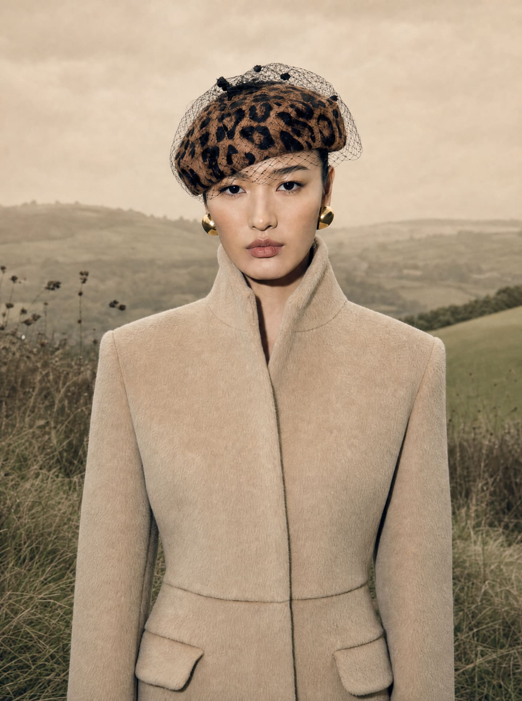
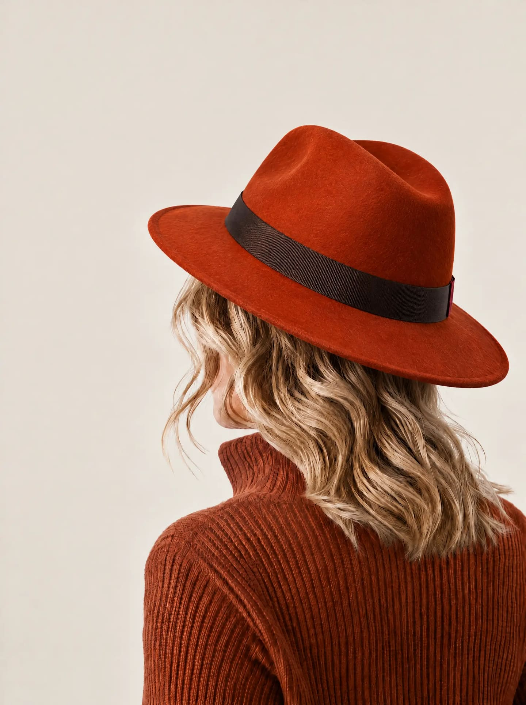

Mujer
COLECCIÓN OTOÑO-INVIERNO · FW27
Sombreros de mujer Otoño-Invierno FW27




Sombreros y gorras hechos a mano en Italia por los maestros sombrereros Marone. Colección Otoño-Invierno FW27.

COLECCIÓN OTOÑO-INVIERNO · FW27

Sombreros y gorras hechos a mano en Italia por los maestros sombrereros Marone. Colección Otoño-Invierno FW27.